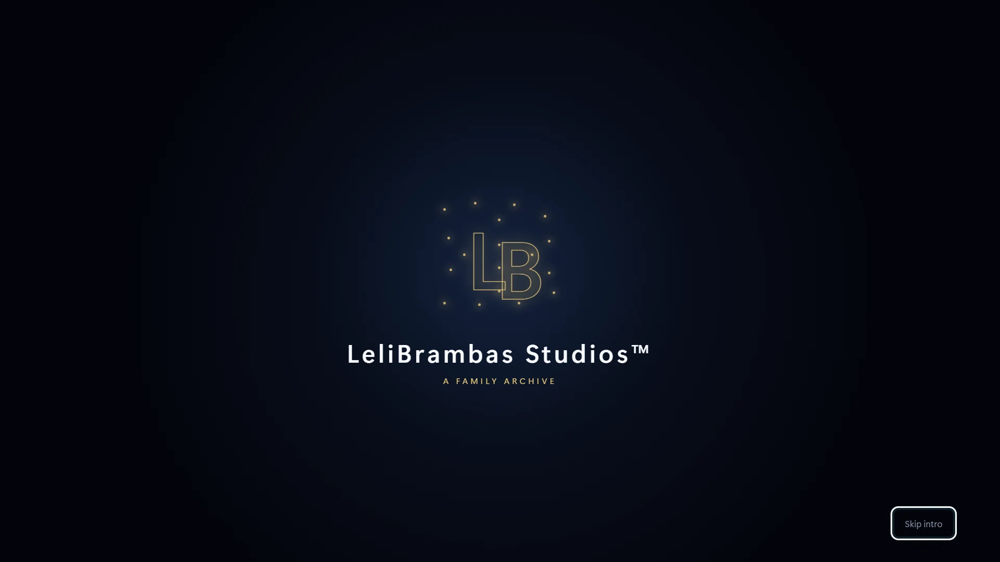
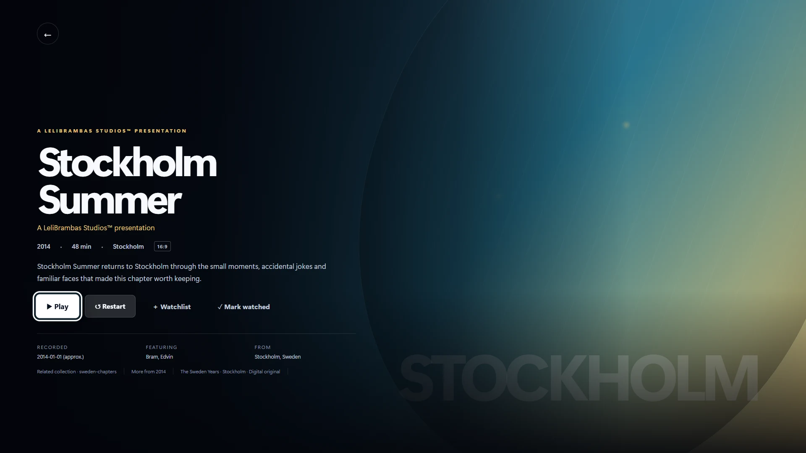

Family Profiles
The idea
Lelibrambas+ began with a simple question: where did all our old family videos go? Most of them still exist somewhere—buried on hard drives, scattered across cloud folders or forgotten inside camera rolls. We have recorded more of our lives than any generation before us, yet we rarely sit down and watch those memories together.
I created Lelibrambas+ to turn that passive collection of files into something people would actually want to explore: a private streaming platform built entirely around one family and its history.
Streaming Home

From file storage to family cinema
Existing cloud services are good at storing videos, but storage alone does not make an archive feel alive. Lelibrambas+ gives personal footage the same sense of presentation, discovery and occasion that commercial streaming platforms give films and series.
Instead of navigating folders and filenames, family members enter a recognisable streaming environment filled with curated libraries, posters, descriptions, collections and featured memories. Holidays, birthdays, childhood recordings and everyday family moments become part of a shared catalogue that is easy to browse from a phone, computer or television.
The result is not simply another place to upload videos. It is a private family cinema.
Collections

A streaming service that becomes your own
Personalisation is at the heart of Lelibrambas+. Each family can give its platform a unique name, logo and visual identity. Administrators can create their own libraries, select icons and placeholders, design artwork and organise films into meaningful collections.
Families could also choose their own opening jingle or create a cinematic intro featuring their name. Pressing play would no longer feel like opening a random video file—it would feel like watching a production from the family’s own studio.
The name Lelibrambas+ reflects that idea. It was created from names within my own family, making the platform itself part of the archive. The product vision extends that same sense of ownership to every user: this is not Lelibrambas+ with somebody else’s content added to it. It becomes their service, their identity and their history.
A Family Studio

Designed for sharing, without becoming public
One family member can manage the archive as an administrator by uploading films, creating collections and maintaining the presentation. Other invited family members receive easy access to the finished streaming experience.
The platform is designed around private access and controlled sharing. Personal recordings remain available to the people they belong to, without requiring relatives to exchange large files, navigate shared drives or publish private memories on public platforms.
This also makes the archive accessible across generations. The person who digitises and organises the footage may be technically confident, while grandparents, parents and children only need to open the app and select something to watch.
Film Details

What Lelibrambas+ stands for
Lelibrambas+ sits between two familiar products: the security and ownership of a private digital archive, and the accessibility and emotional appeal of a modern streaming platform.
At its core, the concept is not about making family videos look more important than they are. It is about recognising that they were already important—and finally giving them an experience worthy of that importance.
Lelibrambas+ transforms forgotten files into a living, shared history. Your memories. Your family. Your streaming service.